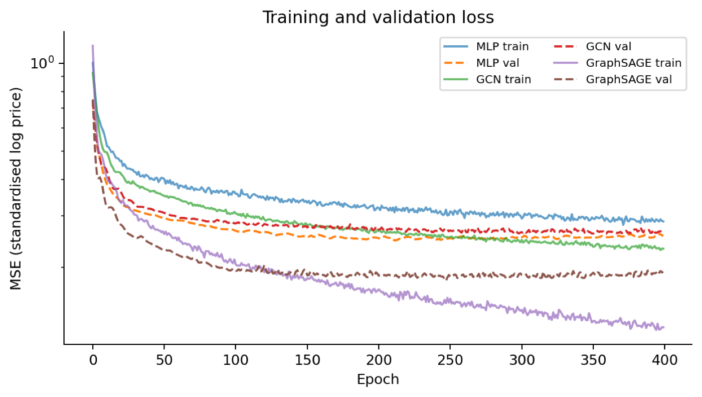
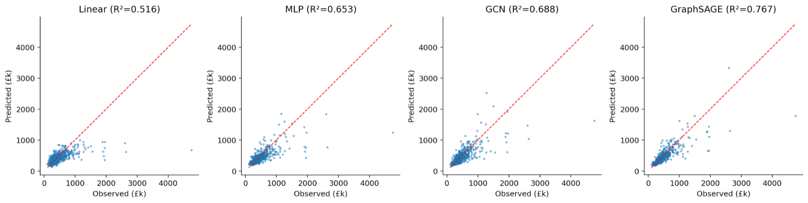
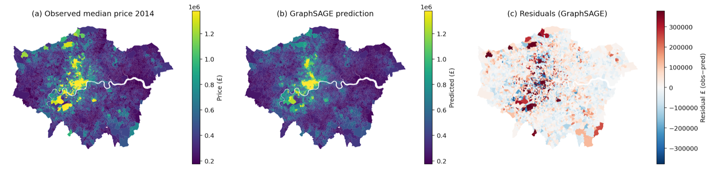

London's housing market is among the most spatially heterogeneous in Europe, with median sale prices varying by an order of magnitude between central and outer boroughs. Modelling this variation matters for affordability research, planning policy, and small-area valuation, and it is a canonical setting for spatial deep learning because property values exhibit two empirical regularities a non-spatial model cannot fully capture: strong spatial autocorrelation (Tobler, 1970) and local clustering of high- or low-value enclaves that crosses administrative boundaries. This study addresses one specific question: does adding an explicit LSOA adjacency graph, processed through a Graph Neural Network (GNN), improve median house-price prediction over a non-spatial Multilayer Perceptron (MLP) using the same node features? The motivation is methodological — it tests whether spatial structure adds information beyond what the same features already encode.
Two related literatures are relevant. The first concerns location representations in GeoAI. Mai et al. (2022) survey location encoding methods that map coordinates to continuous vectors, including Fourier-style positional encodings and pretrained satellite embeddings such as Google's AlphaEarth foundation embeddings (Brown et al., 2025). Such representations encode “what each place looks like” but not “who its neighbours are”. The second literature concerns Graph Neural Networks on spatial graphs. Kipf and Welling (2017) introduced the Graph Convolutional Network (GCN), which aggregates neighbours through normalised symmetric averaging. Hamilton et al. (2017) proposed GraphSAGE, which samples a subset of neighbours and concatenates self with aggregated-neighbour features, supporting inductive prediction on unseen nodes. Recent applications include GNN-based urban-analytics benchmarks showing that explicit spatial graphs outperform tabular baselines on tasks with strong neighbourhood spillovers (Klemmer et al., 2023). This pipeline extends AlphaEarth on London LSOAs and the GNN gravity model to a node-regression task on the full 4,833-LSOA London graph.
The spatial unit is the 2011 LSOA. London comprises 4,835 LSOAs across 33 boroughs; 4,833 remain after dropping two LSOAs with missing 2014 price values. Three open data sources were combined.
First, LSOA polygons with Census 2011 fields were taken from the Greater London Authority's statistical-gis-boundaries-london.zip on the London Datastore, an extract from the ONS Open Geography Portal. The shapefile contains population density per hectare (POPDEN), number of households (HHOLDS), and average household size (AVHHOLDSZ).
Second, the prediction target is the LSOA-level median price paid for residential property in 2014, calculated by GLA from HM Land Registry price-paid data and published in Average House Prices by Borough, Ward, MSOA and LSOA (London Datastore). 2014 is the most recent year in this file. Median prices range from £106,000 to £4,750,000 with a city-wide median of £358,000.
Third, ten node features were assembled per LSOA: POPDEN, HHOLDS and AVHHOLDSZ from above, plus the seven domain scores from the English Indices of Deprivation 2019 (Income, Employment, Education, Health, Crime, Barriers to Housing and Services, Living Environment), released by MHCLG and joined on LSOA11CD. IMD 2019 represents relative deprivation; we treat it as a stable proxy that correlates meaningfully with 2014 prices despite the year mismatch, which is standard practice in small-area price modelling.
A queen-contiguity graph was constructed by treating two LSOAs as connected if their polygons share any non-empty intersection. The result is an undirected, unweighted graph with 26,552 directed edges and an average node degree of 5.5, consistent with what is expected for a planar polygon tessellation.
Four models were fitted in increasing order of spatial awareness:
Linear regression — ordinary least squares baseline (scikit-learn).
MLP — two hidden layers of dimension 64 with ReLU activations, dropout 0.2; no graph information.
GCN — two GCNConv layers (Kipf and Welling, 2017) followed by a linear head; uses every neighbour with normalised symmetric aggregation.
GraphSAGE — two SAGEConv layers (Hamilton et al., 2017) with mean aggregator and concatenation of self with neighbour mean.
The 10 features were scaled to zero mean and unit variance using statistics computed only on the training partition; the target was log-transformed and standardised on the same partition. A random 70 / 15 / 15 train / validation / test split was used.
Table 1 summarises test-set performance. The four models form a clear ordering: Linear (R² = 0.516) < MLP (0.653) < GCN (0.688) < GraphSAGE (0.767). In monetary terms, the median absolute error drops from £122,650 under linear regression to £88,015 under GraphSAGE — a reduction of approximately £35,000 achieved purely by combining a non-linear function class with explicit spatial structure on the same input features.
| Model | Test R² | Test MAE | Test RMSE |
|---|---|---|---|
| Linear | 0.516 | £122,650 | £261,950 |
| MLP | 0.653 | £102,554 | £225,894 |
| GCN | 0.688 | £102,194 | £215,547 |
| GraphSAGE | 0.767 | £88,015 | £191,212 |
Table 1. Test-set performance for the four models on the held-out 15% partition.
GraphSAGE outperforms GCN by approximately 0.08 R² and £14k MAE. The SAGE layer concatenates the node's own representation with the mean of its neighbours' representations before the linear transformation, preserving a clean separation between self and neighbour signals; the GCN's symmetric normalisation collapses them. Allowing different weights for self vs neighbour information is directly relevant when local context and own characteristics both contribute to price.
MLP's gain over the linear baseline (+0.14 R²) reflects the non-linear interactions in the demographic–deprivation–price relationship that ordinary least squares cannot capture. The GNNs' additional gain over MLP (+0.04 for GCN, +0.11 for GraphSAGE) is attributable purely to the queen-contiguity graph, since input features are identical — a clean experimental separation of the spatial-structure contribution.
Figure 1 shows training and validation MSE on a log scale. The three neural models converge smoothly and the train–val gap is small for all of them, indicating no severe overfitting. The GNNs reach a substantially lower loss floor than the MLP, mirroring the held-out performance gap. Best-validation checkpoints were used for evaluation, providing a soft form of early stopping.

The observed-vs-predicted scatter plots in Figure 2 reveal that all models systematically under-predict the highest-value LSOAs (above £2M). Linear regression collapses the upper tail towards the global mean; MLP corrects most of the curvature for mid-range prices but still flattens the top end. GCN and GraphSAGE both extend further along the diagonal, with GraphSAGE producing the tightest cloud and the fewest large errors, although the very top of the price distribution remains challenging for all four models.

Figure 3 maps the spatial behaviour of the best model. Panel (a) shows the observed price surface with the well-known central-London peak (Westminster, Kensington-Chelsea, City) and outer high-value pockets in Hampstead, Highgate and Richmond. Panel (b) shows GraphSAGE predictions on the same scale; the model recovers both the gradient and the major outer-London pockets. Panel (c) shows residuals on a divergent scale: most LSOAs sit close to zero, but small clusters of positive residuals (red) appear in the most premium central wards, indicating the model under-predicts the very top of the London market — unsurprising given that demographic and deprivation indicators do not directly capture the prestige and rarity that drive prime central London prices.

These results support the broader argument in the GeoAI literature that location-aware spatial graphs encode information complementary to tabular features. Even with informative demographic and deprivation features, an explicit adjacency graph cuts test MAE by £15k. The practical implication is that small-area price models for affordability research, planning, or valuation can benefit from a GNN backbone without requiring any additional data inputs.
Several limitations should temper the headline numbers. The three datasets are from different years — 2011 Census features, 2014 prices, 2019 IMD — introducing temporal noise. MAUP also matters: switching from LSOAs to MSOAs or wards changes both graph topology and target variance. Edge effects mildly disadvantage the GNN at the periphery, where boundary LSOAs lose neighbours from outside London. Finally, the random node split allows local information to leak through the graph; a fairer benchmark would hold out contiguous regions, e.g. one borough at a time.
Several extensions follow naturally. Augmenting the 10 node features with the 64-dimensional Google AlphaEarth embeddings would let the model encode satellite-derived urban form alongside socioeconomic structure. A Graph Attention Network (GAT, Veličković et al., 2018) variant would let the model learn neighbour weights rather than treating all neighbours equally. Inverse-distance edge weights, leave-one-borough-out cross-validation, and a temporal extension to year-on-year price changes would all sharpen the methodological claim.
This study built and compared four models for predicting median house prices across the 4,833 LSOAs of Greater London using real GLA / HM Land Registry, Census 2011, and IMD 2019 data. On the held-out test set GraphSAGE achieves R² = 0.767 and MAE £88,015, substantially improving on the non-spatial MLP (R² = 0.653, MAE £102,554) and the linear baseline (R² = 0.516, MAE £122,650). The empirical findings support the methodological claim that an explicit spatial adjacency graph carries information that demographic and deprivation features alone do not capture, and that the choice of graph aggregator matters: GraphSAGE's self-vs-neighbour concatenation extracts more from the same graph than the GCN's symmetric normalisation. The pipeline is reproducible and modular: substituting a more recent year of price data, additional features such as AlphaEarth embeddings, or alternative graph constructions would re-use the entire model and evaluation stack.
Brown, C. F., Kazmierski, M. R., Pasquarella, V. J., Rucklidge, W. J., Samsikova, M., Zhang, C., Shelhamer, E., et al. (2025). AlphaEarth Foundations: An embedding field model for accurate and efficient global mapping from sparse label data. arXiv:2507.22291.
Greater London Authority. (2015). Average House Prices by Borough, Ward, MSOA & LSOA. London Datastore.
Greater London Authority. (2014). Statistical GIS Boundary Files for London. London Datastore.
Hamilton, W. L., Ying, R., & Leskovec, J. (2017). Inductive representation learning on large graphs. Advances in Neural Information Processing Systems, 30, 1024–1034.
Kipf, T. N., & Welling, M. (2017). Semi-supervised classification with graph convolutional networks. International Conference on Learning Representations.
Klemmer, K., Safir, N. S., & Neill, D. B. (2023). Positional encoder graph neural networks for geographic data. Proceedings of the 26th International Conference on Artificial Intelligence and Statistics (AISTATS), PMLR 206:1379–1389.
Mai, G., Janowicz, K., Hu, Y., Gao, S., Yan, B., Zhu, R., Cai, L., & Lao, N. (2022). A review of location encoding for GeoAI: methods and applications. International Journal of Geographical Information Science, 36(4), 639–673.
Ministry of Housing, Communities and Local Government. (2019). English Indices of Deprivation 2019.
Office for National Statistics. (2011). Lower Layer Super Output Areas (December 2011) generalised clipped boundaries. ONS Open Geography Portal.
Tobler, W. R. (1970). A computer movie simulating urban growth in the Detroit region. Economic Geography, 46(sup1), 234–240.
Veličković, P., Cucurull, G., Casanova, A., Romero, A., Liò, P., & Bengio, Y. (2018). Graph attention networks. International Conference on Learning Representations.